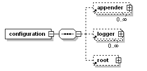
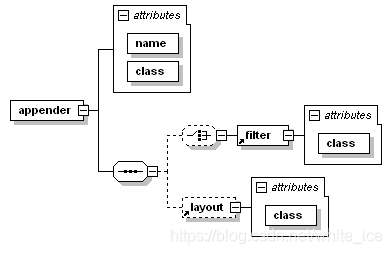
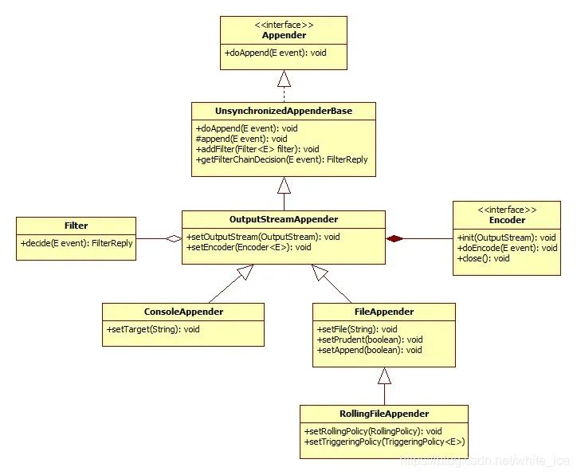
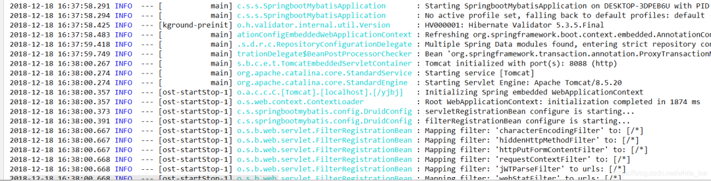

在讲解 logback-spring.xml 之前我们先来了解三个单词：Logger, Appenders and Layouts（记录器、附加器、布局）
Logback基于三个主要类：Logger、Appender 和 Layout。这三种类型的组件协同工作，使开发人员能够根据消息类型和级别记录消息，并在运行时控制这些消息的格式以及报告的位置。首先给出一个基本的xml配置如下：
1 | <configuration> |
一、<configuration>元素
logback.xml配置文件的基本结构可以描述为<configuration>元素，包含零个或多个<appender>元素，后跟零个或多个<logger>元素，后跟最多一个<root>元素(也可以没有)。下图说明了这种基本结构：

二、<logger>元素
<logger> 元素只接受一个必需的 name 属性，一个可选的 level 属性和一个可选的 additivity 属性，允许值为true或false。level属性的值允许一个不区分大小写的字符串值TRACE，DEBUG，INFO，WARN，ERROR，ALL或OFF。特殊于大小写不敏感的值INHERITED或其同义词NULL将强制记录器的级别从层次结构中的较高级别继承，<logger> 元素可以包含零个或多个 <appender-ref> 元素; 这样引用的每个 appender 都被添加到指定的logger中，(注：additivity属性下面详说)，logger元素级别具有继承性。
例1：示例中，仅为根记录器分配了级别。此级别值DEBUG由其他记录器X，X.Y和X.Y.Z继承
| Logger name | Assigned level | Effective level |
|---|---|---|
| root | DEBUG | DEBUG |
| X | none | DEBUG |
| X.Y | none | DEBUG |
| X.Y.Z | none | DEBUG |
例2：所有记录器都有一个指定的级别值。级别继承不起作用
| Logger name | Assigned level | Effective level |
|---|---|---|
| root | ERROR | ERROR |
| X | INFO | INFO |
| X.Y | DEBUG | DEBUG |
| X.Y.Z | WARN | WARN |
例3：记录器root，X和X.Y.Z分别被分配了DEBUG，INFO和ERROR级别。Logger X.Y从其父X继承其级别值。
| Logger name | Assigned level | Effective level |
|---|---|---|
| root | DEBUG | DEBUG |
| X | INFO | INFO |
| X.Y | none | INFO |
| X.Y.Z | ERROR | ERROR |
例4：在示例4中，记录器root和X分别被分配了DEBUG和INFO级别。记录器X.Y和X.Y.Z从其最近的父X继承其级别值，该父级具有指定的级别。
| Logger name | Assigned level | Effective level |
|---|---|---|
| root | DEBUG | DEBUG |
| X | INFO | INFO |
| X.Y | none | INFO |
| X.Y.Z | none | INFO |
三、<root>元素
<root> 元素配置根记录器。它支持单个属性，即level属性。它不允许任何其他属性，因为additivity标志不适用于根记录器。此外，由于根记录器已被命名为“ROOT”，因此它也不允许使用name属性。level属性的值可以是不区分大小写的字符串TRACE，DEBUG，INFO，WARN，ERROR，ALL或OFF之一<root>元素可以包含零个或多个<appender-ref>元素; 这样引用的每个appender都被添加到根记录器中(注：additivity属性下面详说)。
四、<appender>元素
appender使用<appender>元素配置，该元素采用两个必需属性name和class。name属性指定appender的名称，而class属性指定要实例化的appender类的完全限定名称。<appender>元素可以包含零个或一个<layout>元素，零个或多个<encoder>元素以及零个或多个<filter>元素，下图说明了常见的结构：

重要：在logback中，输出目标称为appender，addAppender方法将appender添加到给定的记录器logger。给定记录器的每个启用的日志记录请求都将转发到该记录器中的所有appender以及层次结构中较高的appender。换句话说，appender是从记录器层次结构中附加地继承的。例如，如果将控制台appender添加到根记录器，则所有启用的日志记录请求将至少在控制台上打印。如果另外将文件追加器添加到记录器（例如L），则对L和L的子项启用的记录请求将打印在文件和控制台上。通过将记录器的additivity标志设置为false，可以覆盖此默认行为，以便不再添加appender累积。
Appender是一个接口，它有许多子接口和实现类，具体如下图所示：

其中最重要的两个Appender为：ConsoleAppender 、RollingFileAppender。
1.ConsoleAppender
ConsoleAppender，如名称所示，将日志输出到控制台上。
2.RollingFileAppender
RollingFileAppender，是FileAppender的一个子类，扩展了FileAppender，具有翻转日志文件的功能。例如，RollingFileAppender 可以记录到名为log.txt文件的文件，并且一旦满足某个条件，就将其日志记录目标更改为另一个文件。
有两个与RollingFileAppender交互的重要子组件。第一个RollingFileAppender子组件，即 RollingPolicy 负责执行翻转所需的操作。RollingFileAppender的第二个子组件，即 TriggeringPolicy 将确定是否以及何时发生翻转。因此，RollingPolicy 负责什么和TriggeringPolicy 负责什么时候。
作为任何用途，RollingFileAppender 必须同时设置 RollingPolicy 和 TriggeringPolicy。但是，如果其 RollingPolicy 也实现了TriggeringPolicy 接口，则只需要显式指定前者。
3.滚动策略
TimeBasedRollingPolicy：可能是最受欢迎的滚动策略。它根据时间定义翻转策略，例如按天或按月。TimeBasedRollingPolicy承担滚动和触发所述翻转的责任。实际上，TimeBasedTriggeringPolicy实现了RollingPolicy和TriggeringPolicy接口。
SizeAndTimeBasedRollingPolicy：有时您可能希望按日期归档文件，但同时限制每个日志文件的大小，特别是如果后处理工具对日志文件施加大小限制。为了满足此要求，logback 提供了 SizeAndTimeBasedRollingPolicy ，它是TimeBasedRollingPolicy的一个子类，实现了基于时间和日志文件大小的翻滚策略。
4.<encoder>元素
encoder中最重要就是pattern属性，它负责控制输出日志的格式，这里给出一个我自己写的示例：
1 | <pattern>%d{yyyy-MM-dd HH:mm:ss.SSS} %highlight(%-5level) --- [%15.15(%thread)] %cyan(%-40.40(%logger{40})) : %msg%n</pattern> |
使用后的输出格式如下图所示

其中：
- %d{yyyy-MM-dd HH:mm:ss.SSS}：日期
- %-5level：日志级别
- %highlight()：颜色，info为蓝色，warn为浅红，error为加粗红，debug为黑色
- %thread：打印日志的线程
- %15.15():如果记录的线程字符长度小于15(第一个)则用空格在左侧补齐,如果字符长度大于15(第二个),则从开头开始截断多余的字符
- %logger：日志输出的类名
- %-40.40()：如果记录的logger字符长度小于40(第一个)则用空格在右侧补齐,如果字符长度大于40(第二个),则从开头开始截断多余的字符
- %cyan：颜色
- %msg：日志输出内容
- %n：换行符
5.<filter>元素
filter中最重要的两个过滤器为：LevelFilter、ThresholdFilter。
LevelFilter 根据精确的级别匹配过滤事件。如果事件的级别等于配置的级别，则筛选器接受或拒绝该事件，具体取决于onMatch和onMismatch属性的配置。例如下面配置将只打印INFO级别的日志，其余的全部禁止打印输出：
1 | <configuration> |
ThresholdFilter 过滤低于指定阈值的事件。对于等于或高于阈值的事件，ThresholdFilter将在调用其decision（）方法时响应NEUTRAL。但是，将拒绝级别低于阈值的事件，例如下面的配置将拒绝所有低于INFO级别的日志，只输出INFO以及以上级别的日志：
1 | <configuration> |
五、详细的logback-spring.xml示例：
以上介绍了xml中重要的几个元素，下面将我配置的xml贴出来以供参考（实现了基于日期和大小翻滚的策略，以及经INFO和ERROR日志区分输出，还有规范日志输出格式等）：
1 |
|
六、附加内容
6.1：这里再说下log日志输出代码，一般有人可能在代码中使用如下方式输出：
1 | Object entry = new SomeObject(); |
6.2：上面看起来没什么问题，但是会存在构造消息参数的成本，即将entry转换成字符串相加。并且无论是否记录消息，都是如此，即：那怕日志级别为INFO，也会执行括号里面的操作，但是日志不会输出，下面是优化后的写法：
1 | if(logger.isDebugEnabled()) { |
6.3：6.2的写法，首先对设置的日志级别进行了判断，如果为debug模式，才进行参数的构造，对第一种写法进行了改善。不过还有最好的写法，使用占位符：
1 | Object entry = new SomeObject(); |
只有在评估是否记录之后，并且只有在决策是肯定的情况下，记录器实现才会格式化消息并将“{}”对替换为条目的字符串值。换句话说，当禁用日志语句时，此表单不会产生参数构造的成本。
logback作者进行测试得出：第一种和第三种写法将产生完全相同的输出。但是，在禁用日志记录语句的情况下，第三个变体将比第一个变体优于至少30倍。
如果有多个参数，写法如下：
1 | logger.debug("The new entry is {}. It replaces {}.", entry, oldEntry); |
如果需要传递三个或更多参数，则还可以使用Object []变体：
1 | Object[] paramArray = {newVal, below, above}; |
6.4：记录日志的时候我们可能需要在文件中记录下异常的堆栈信息，经过测试，logger.error(e) 不会打印出堆栈信息，正确的写法是：
1 | logger.error("程序异常, 详细信息:{}", e.getLocalizedMessage() , e); |